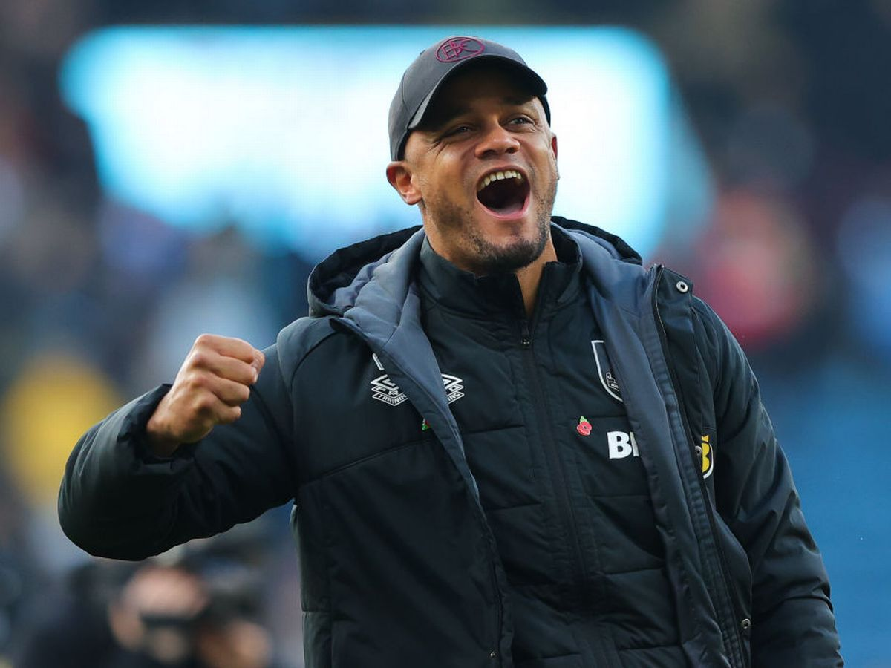

United Vs Burnley: 2-0
The next round of the Carabao Cup saw Man United clash against Championship side Burnley. Burnley's new manager, former Man City player, Vincent Kompany, reinvented the team completely leading to them being one of the best teams in the English Championship.
Burnley Manager Vincent Kompany
This was a huge game for whichever team won as it meant they would advance to the Quarter Finals of the Carabao Cup. This was also the first game after the World Cup which meant that some players would have been tired out from playing at the World Cup, and whoever did not go to the World Cup would have had 6 weeks out from playing. United had a chance early on thanks to Garnacho who missed his shot. In the 27th minute, a wonderful bit of team link up play led to United taking the lead. A long shot from Bruno Fernandes fell to full back Aaron Wan-Bissaka who crossed it into the box to be scored by midfielder Christian Eriksen. United were creating the strong attacking chances but Burnley were very strong defensively which led to a very even matchup. In the 57th minute Marcus Rashford went on a brilliant solo run which led to him scoring making it 2-0 to Manchester United. This would be enough for United to secure the win and advance to the Quarter Finals.